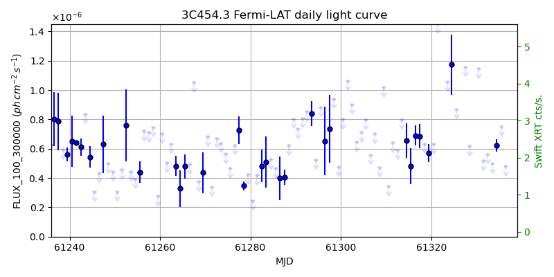
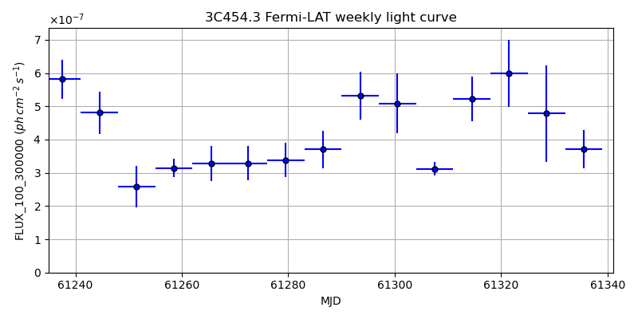
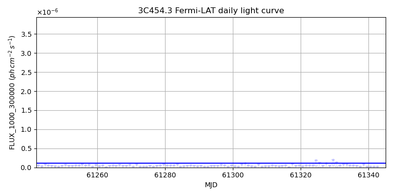
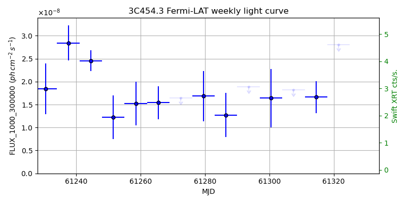

LAT Lightcurve site: https://fermi.gsfc.nasa.gov/ssc/data/access/lat/msl_lc/source/3C_454d3
NED: Query
Time of last update of this page: UT: 2026-10-30 15:29 (MJD: 61343.645)
| Property | Value |
|---|---|
| R.A. | 22:53:57.84 |
| Dec. | 16:08:52.8 |
| z | 0.858 |
| 3FGL SpectrumType | PLSuperExpCutoff |
| 3FGL PL Index | |
| 3FGL Flux_100_300000 | 2.39e-06 1 / (s cm2) |
| 3FGL Flux_1000_300000 | 1.06e-07 1 / (s cm2) |
| 3FGL Flux >200 GeV | 7.45e-14 1 / (s cm2) |
| 3FGL Extrap. Crab >200 GeV | 0.00 |
| 3FGL Flux After EBL Absorption >200GeV | 4.70e-15 1 / (s cm2) |
| 3FGL EBL Crab Fraction >200GeV | 0.00 |

| MJD | dMJD | Flux | dFlux | Frac3FGL | FracCrab>200GeV | EBLFracCrab>200GeV |
|---|---|---|---|---|---|---|
| 61338.50 | 0.50 | 2.71e-07 | 1.19e-07 | 0.11 | 0.00 | 0.00 |
| 61339.50 | 0.50 | 3.89e-07 | 0.00e+00 | 0.00 | 0.00 | 0.00 |
| 61340.50 | 0.50 | 6.99e-07 | 0.00e+00 | 0.00 | 0.00 | 0.00 |
| 61341.50 | 0.50 | 6.59e-07 | 1.95e-07 | 0.28 | 0.00 | 0.00 |
| 61342.50 | 0.50 | 3.31e-07 | 0.00e+00 | 0.00 | 0.00 | 0.00 |

| MJD | dMJD | Flux | dFlux | Frac3FGL | FracCrab>200GeV | EBLFracCrab>200GeV |
|---|---|---|---|---|---|---|
| 61307.50 | 3.50 | 3.12e-07 | 2.06e-08 | 0.13 | 0.00 | 0.00 |
| 61314.50 | 3.50 | 5.23e-07 | 6.70e-08 | 0.22 | 0.00 | 0.00 |
| 61321.50 | 3.50 | 5.99e-07 | 1.01e-07 | 0.25 | 0.00 | 0.00 |
| 61328.50 | 3.50 | 4.78e-07 | 1.46e-07 | 0.20 | 0.00 | 0.00 |
| 61335.50 | 3.50 | 3.71e-07 | 5.76e-08 | 0.15 | 0.00 | 0.00 |

| MJD | dMJD | Flux | dFlux | Frac3FGL | FracCrab>200GeV | EBLFracCrab>200GeV |
|---|---|---|---|---|---|---|
| 61338.50 | 0.50 | 8.81e-08 | 0.00e+00 | 0.00 | 0.00 | 0.00 |
| 61339.50 | 0.50 | 2.64e-08 | 0.00e+00 | 0.00 | 0.00 | 0.00 |
| 61340.50 | 0.50 | 1.74e-08 | 0.00e+00 | 0.00 | 0.00 | 0.00 |
| 61341.50 | 0.50 | 2.30e-08 | 0.00e+00 | 0.00 | 0.00 | 0.00 |
| 61342.50 | 0.50 | 1.90e-08 | 0.00e+00 | 0.00 | 0.00 | 0.00 |

| MJD | dMJD | Flux | dFlux | Frac3FGL | FracCrab>200GeV | EBLFracCrab>200GeV |
|---|---|---|---|---|---|---|
| 61307.50 | 3.50 | 1.82e-08 | 0.00e+00 | 0.00 | 0.00 | 0.00 |
| 61314.50 | 3.50 | 1.66e-08 | 3.48e-09 | 0.16 | 0.00 | 0.00 |
| 61321.50 | 3.50 | 2.81e-08 | 0.00e+00 | 0.00 | 0.00 | 0.00 |
| 61328.50 | 3.50 | 3.72e-08 | 0.00e+00 | 0.00 | 0.00 | 0.00 |
| 61335.50 | 3.50 | 2.00e-08 | 4.86e-09 | 0.19 | 0.00 | 0.00 |
--------------------------------------------------------- Using user-supplied coords: 22:53:57.84 16:08:52.8 2000 --------------------------------------------------------- FLWO UT night of: 2026-10-31 Local Sid. @ Midnight: 02:14 Sunset (-15.0) (local, UT): 18:44 01:44 Sunrise (-15.0) (local, UT): 05:31 12:31 Moonrise (local, UT): 21:49 04:49 Moonset (local, UT): Moon phase: 0.68 --------------------------------------------------------- AzTime LSID UT Obj_el Obj_az Mn_el Mn_az Sep. --------------------------------------------------------- 18:44 20:57 01:44 59.2 113.0 -27.0 28.6 110.3 19:14 21:27 02:14 64.9 122.6 -23.9 34.8 110.6 19:44 21:57 02:44 69.8 136.4 -20.2 40.4 110.9 20:14 22:27 03:14 73.4 156.4 -16.1 45.6 111.3 20:44 22:58 03:44 74.6 182.5 -11.6 50.4 111.6 21:14 23:28 04:14 72.9 207.8 -6.7 54.8 111.9 21:44 23:58 04:44 69.0 226.6 -0.9 58.8 112.2 22:14 00:28 05:14 63.9 239.4 3.8 62.5 112.5 22:44 00:58 05:44 58.1 248.4 9.2 66.0 112.7 23:14 01:28 06:14 52.1 255.2 14.8 69.3 113.0 23:44 01:58 06:44 45.8 260.7 20.6 72.5 113.2 00:14 02:28 07:14 39.4 265.4 26.5 75.5 113.5 00:44 02:58 07:44 33.1 269.5 32.5 78.6 113.7 01:14 03:28 08:14 26.7 273.4 38.5 81.7 113.9 01:44 03:58 08:44 20.3 277.1 44.7 84.9 114.1 02:14 04:28 09:14 14.0 280.7 50.8 88.3 114.3 02:44 04:59 09:44 7.8 284.4 57.0 92.2 114.5 03:14 05:29 10:14 1.9 288.2 63.2 97.0 114.7 03:44 05:59 10:44 -3.0 292.3 69.3 103.5 114.9 04:14 06:29 11:14 -10.3 296.5 75.2 113.7 115.1 04:44 06:59 11:44 -15.9 301.2 80.4 133.8 115.3 05:14 07:29 12:14 -21.2 306.4 83.0 177.6 115.4 05:31 07:46 12:31 -24.1 309.6 82.2 206.9 115.6 --------------------------------------------------------- Dark hours >55 deg.: 3.08 srcstart (UT): 2026-10-31 01:44 srcend (UT): 2026-10-31 04:48